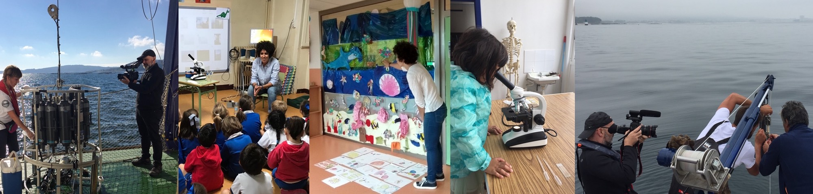

Websites
Social Media
Youtube
- REMEDIOS: Capítulo 01
- REMEDIOS: Capítulo 01-Tomas falsas
- REMEDIOS: Píldora Fitoplancton
- REMEDIOS: Píldora Capas finas de fitoplancton (GAL)
- REMEDIOS: Píldora Capas finas de fitoplancton (ESP)
- REMEDIOS: Píldora Turbulencia (GAL)
- REMEDIOS: Píldora Turbulencia (ESP)
- REMEDIOS: Bioturbulencia (GAL)
- REMEDIOS: Bioturbulencia (ENG)
- REMEDIOS - Influence of Wind Pulses on Phytoplankton in Upwelling Bays (ENG)
- REMEDIOS - Implicación das mudanzas no vento na elevada produtividade das Rías Baixas (GAL)
- Bizarre Beasts - Anchovies Stir The Ocean By...Doing It
Radio & Podcast
- O CIM desvela por que o espertar sexual dos bocartes afecta as correntes oceánicas
- npr 'Wait Wait' for April 9, 2022: With Not My Job guest Matt Walsh (minute 9:30)
TV
- Saber y Ganar: ¿Qué fenómeno marino se genera por el frenesí sexual de las anchoas? (03/11/23, minuto 1)
- La Roca/La Sexta: Una investigación sobre las anchoas, premio Ig Nobel de Física (17/09/23)
Newspaper
- National Geographic: Es, más que amor, un auténtico frenesí (24/01/24)
- A Silveira de Kiko da Silva (03/01/24)
- El Pais: Premio Ig Nobel para un estudio español sobre la marejadilla que causa el frenesí sexual de las anchoas (14/09/23)
- Levity and gravity. Nat. Phys. 19, 1375 (2023)
- Faro de Vigo: La UVigo explica la alta productividad de las rías frente a otras áreas de afloramiento en el mundo (05/06/23)
- Eos, 103: Tiny Creatures May Play a Difficult-to-Detect Role in Ocean Mixing(20/05/22)
Last updated September 2025